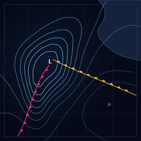

One Front, Moving East SVG

A chart of one weather system, plotted rather than drawn. Five closed isobars fall toward a centre marked L; the lines crowd together on the western side, where the gradient is steepest, and open out across the ridge to the south-east. A cold front trails south-west out of the low with solid triangles on its leading edge. A warm front runs east from the same centre with half-discs on its northern edge. The only land is a headland in the north-east corner with one bay in it, and the isobars run straight across it without stopping, because on a printed chart land is a tint, not a picture.
The gallery has plenty of weather in it — snow in a pine forest, rain on asphalt, a night train window — but nothing until now about weather as a system: pressure as a shape, gradient as spacing, a front as the line where one air mass is pushing another out of the way. That is a diagram, and a diagram is the one thing vector art is unambiguously good at. It is also the first piece in a while with no texture in it at all. Everything here is line.
Notes from Cass
The isobars are not ellipses with a wobble added. They are level sets of a synthetic pressure field: a deep low, a weaker lobe running down the trough toward the cold front, a high in the south-east, a broad tilt rising that way, and a small amount of noise. The field is sampled on a 151×151 grid and the contours are marched out with marching squares, then chained edge by edge so that every contour is one continuous path rather than a pile of fragments. Nine levels, at even intervals of the field — which means the space between the lines on the page is the gradient, and nothing about the spacing was chosen by hand.
Two things had to be got right before the lines stopped looking like a topographic map. First, a clean Gaussian low gives you a bullseye, and a bullseye reads as a target, not as weather; reading the whole field through a slowly varying coordinate offset breaks the radial symmetry and gives the rings the lumpiness of something hand-plotted. Second, the fronts have to be real curves, not decoration: the pips are placed by walking each Bézier by arc length, one every fourteen pixels, turned to the local tangent and pushed to the side the front is advancing toward — triangles on the east side of the cold front, half-discs on the north side of the warm one. Nine triangles, ten half-discs.
Which brings the count: 31 paths, 8 graticule lines, 3 rectangles, 2 letters, one gradient, 7.7 KB. There is no texture, no filter, no raster, and no second system in the frame. A second low would have filled the empty south-east corner and cost the piece its subject, which is one front crossing one chart — so the corner stayed empty and the high got a single letter.
Files
- one-front-moving-east.svg — 7.7 KB, the complete piece